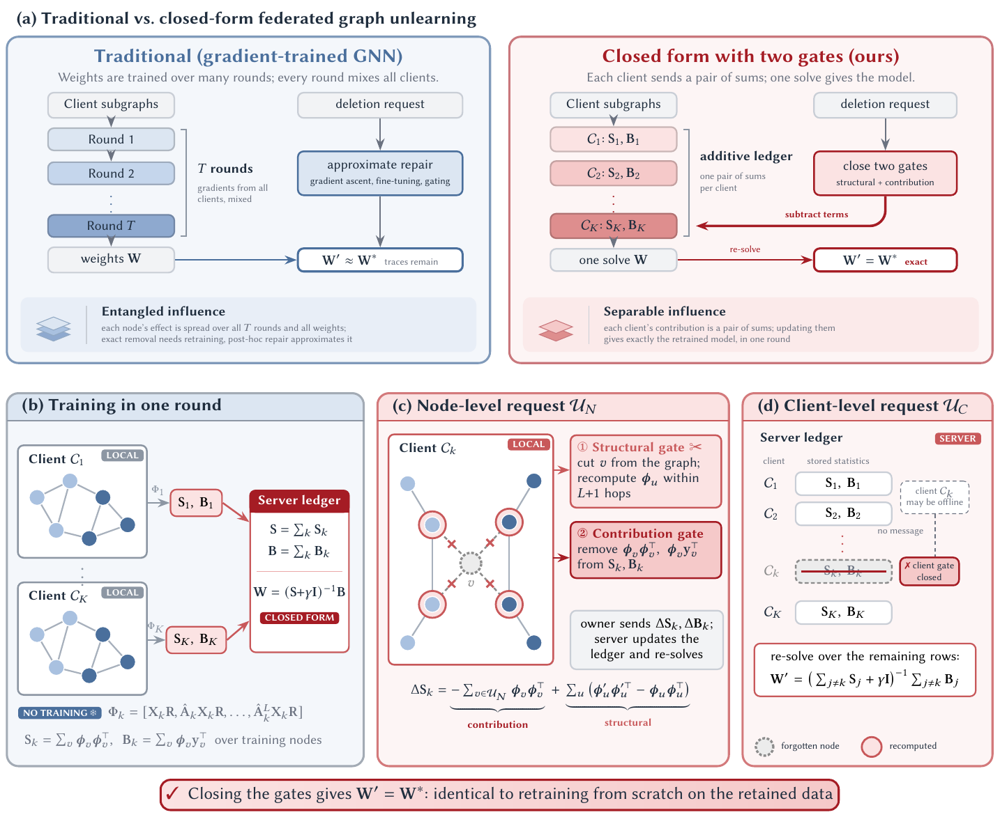

Graph neural networks trained in federated settings retain information about the nodes they were trained on. When a node or a whole client asks to be forgotten, approximate methods leave a trace that can still be detected. We describe a federated graph learner whose unlearning is exact: after a node-level or client-level request, the model equals the model retrained from scratch on the remaining data.
Each client computes node features with a fixed propagation that has no trained parameters, and the server fits a ridge classifier from statistics the clients send. Deleting a node on a graph changes two things: its own contribution to the statistics, and the features of its neighbours. A contribution gate and a structural gate handle the two changes; we prove that both are needed and that together they give the retrained model. A node request involves only the client that owns the nodes; a client request needs no message from the removed client.
On seven benchmarks, the unlearned model matches retraining up to floating-point rounding in every check, membership attacks on the deleted data give exactly the retrained model's score, and a request takes a fraction of a second. We also measure what the shared statistics reveal, and how much protection a secure-aggregation view provides.

Learner
Node features Φk = [H, ÂH, …, ÂLH, 1] with nothing learned; a ridge classifier W = (ΣSk + γI)-1ΣBk from per-client statistics.
Structural gate
Removes the deleted nodes' edges before features are recomputed, so their neighbours get the features they would have after retraining.
Contribution gate
Leaves the deleted nodes out of the statistics. A client gate drops a whole client's statistics at the server, with no message from it.
Accuracy of the unlearned model minus the accuracy of retraining, in points. Baselines use their reported numbers and the reported retraining; ours compares our unlearned and retrained models (0 in every run).
@inproceedings{anonymous2027exactfgu,
title = {Exact Federated Graph Unlearning with a Closed-Form Learner and Two Gates},
author = {Anonymous Authors},
booktitle = {Proceedings on Privacy Enhancing Technologies (PoPETs)},
year = {2027}
}